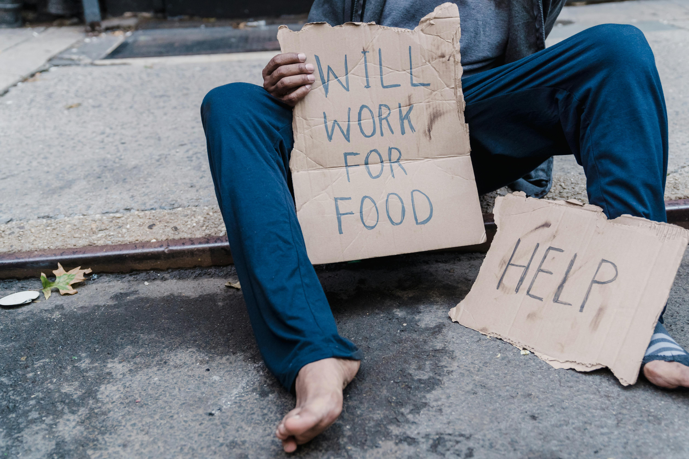

Summary
- There are two types of poverty absolute and reflective
- Absolute is when a persons income are unable to meet basic survival needs.
- Reflective poverty is based on calculation of income to family size and age.
- Poverty can lead to things such as lack of food, water and education.
What is poverty?

There is two types of poverty
- Absolute poverty
- Relative poverty
Absolute poverty
Absolute poverty is defined as when a persons income and resources are unable to meet basic survial needs.
Relative poverty
Relative poverty is based on the calculation of income compared to family sizes and age. This calculation is Ireland is knowing as a living wage.
What can poverty mean for people
Poverty can lead to lack of basic needs such as food, healthcare, education, safe and adequate housing and politcal and social inculsion.
Charities who help those suffering from poverty.
A charity is an organisation with the purpose of public benefit. It must use all its resources including propety and finical to aid its purpose. There is a number of chairites who aid those struggling with poverty both nationally and internationally. Here is a list of some.
- Unicef Ireland. Unicef aid children in need. Children in places such as war zones and 3rd world countires.
- Trócaire, are an internaitonal charity who help tackle underlying causes of povery.
- St. Vincent De Paul, try provide immidiate relief to families in need but also try find underlying cause of poverty in the families they see.
References
- habitat.org
- Unicef.ie
- Trocaire.org
- svp.ie
- Citizeninformation.ie